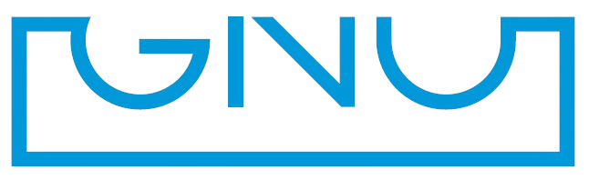

경상국립대학교
GYEONGSANG NATIONAL UNIVERSITY

경상국립대학교
GYEONGSANG NATIONAL UNIVERSITY
Q1. 플립러닝(FL) 형태로 진행되지만 매 시간 수업 중 활동에서 PBL이 수행된다면?
👉 플립러닝(FL)로 신청하시면 됩니다.
Q2. 매 수업 시간은 PBL로 진행되지만 학기말에 최종 산출물이 제작되는 방식이라면?
👉 PjBL (프로젝트기반학습)로 신청하시면 됩니다.